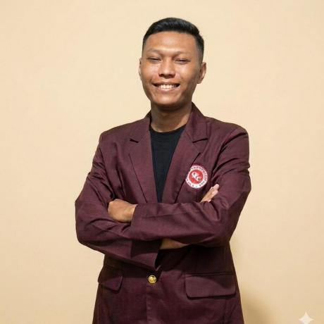

Operasional · Administrasi · Sistem Informasi
Halo, saya
Ricky Yudha Pratama
Berpengalaman mengelola operasional parkir di PT Rapik Karya Mandiri, termasuk koordinasi tim, pelaporan pendapatan, dan layanan pelanggan. Saya juga mahasiswa S1 Sistem Informasi yang tertarik pada teknologi informasi, pengolahan data, dan troubleshooting sistem.

01 / PROFIL
Mengenal saya
Saya merupakan lulusan SMK Asy-Syifa jurusan Rekayasa Perangkat Lunak dan saat ini menempuh pendidikan S1 Sistem Informasi di Institut Teknologi Bisnis & Bahasa Dian Cipta Cendekia. Saya memiliki ketertarikan pada teknologi informasi, cepat belajar, dan mudah beradaptasi dengan sistem baru.
Dalam pekerjaan, saya menangani operasional parkir, koordinasi tim, laporan pendapatan, pengelolaan kas, serta layanan pelanggan. Saya siap terus mengembangkan kemampuan teknis maupun nonteknis dan berkontribusi dalam lingkungan kerja profesional.
02 / KAPABILITAS
Keahlian & alat
Perangkat & teknologi
Kolaborasi & cara kerja
03 / SOROTAN PEKERJAAN
Kontribusi dalam operasional
01
Operasional parkir harian
Mengelola operasional parkir harian, memastikan kepatuhan terhadap SOP, mengatur lalu lintas kendaraan, dan mengoptimalkan area parkir.
Capaian500–1.200 kendaraan per hari (mobil dan motor).Waktu antrean gerbang masuk/keluar berkurang 25% melalui optimalisasi alur lalu lintas dan kesiapan menangani kendala teknis.
02
Koordinasi dan pengembangan tim
Memimpin tim, menyusun jadwal kerja, memberikan pelatihan staf, dan menangani keluhan pelanggan secara profesional.
CapaianMemimpin, mengawasi, dan melatih 15–20 staf: kasir, juru parkir, dan personel keamanan.Mengatur 3 shift untuk cakupan pengawasan operasional 24/7.
03
Pelaporan dan pemantauan sistem
Microsoft Excel: mencatat dan merekap data pendapatan serta kas sebagai bahan laporan.
CCTV: memantau keamanan area dan melakukan pengecekan awal saat ada kendala sistem.
Sistem parkir: memantau kesiapan sistem agar operasional kendaraan dan area parkir berjalan lancar.
CapaianRekap pendapatan kas harian di Excel dengan akurasi pencatatan 100% (zero disparity).Menangani gangguan sistem/CCTV dengan cepat untuk meminimalkan downtime operasional parkir.
Ringkasan capaian
500–1.200kendaraan per hari
15–20staf dikoordinasi
3 shiftcakupan operasional 24/7
Grafik capaian
Pengurangan waktu antrean25%
Akurasi pencatatan Excel100%
04 / PERJALANAN
Pengalaman kerja
Peran
Car Part Manager
PT Rapik Karya Mandiri
Mengelola operasional parkir harian dan kepatuhan SOP; mengatur lalu lintas kendaraan serta area parkir; memimpin dan melatih tim; mengelola laporan pendapatan dan kas; memantau sistem parkir dan keamanan; serta menangani keluhan pelanggan.
Lokasi penugasan & durasi
2 tahun
RSUD Sawangan Depok
Menstabilkan operasional parkir jangka panjang di fasilitas kesehatan publik dengan arus kendaraan pasien dan pengunjung yang padat serta dinamis.
3 bulan
Lokbin Meruya Ilir
Menata area parkir komersial/pasar binaan dan menertibkan sirkulasi lalu lintas di kawasan dengan aktivitas perdagangan yang padat.
4 bulan
RSUD Budhi Asih
Mendukung pemulihan sistem operasional dan koordinasi tim pengamanan/parkir di rumah sakit rujukan dengan mobilitas ambulans dan pengunjung yang tinggi.
2 bulan
Kantor Walikota Depok
Mendukung pengamanan, pengaturan sirkulasi, dan ketertiban area parkir di pusat pemerintahan dengan kunjungan pejabat dan tamu instansi.
3 bulan
RSUD Palembang
Menjalankan penugasan lintas daerah untuk audit operasional, pembenahan sistem parkir rumah sakit regional, dan penyelesaian kendala di lapangan.
05 / PEMBELAJARAN
Pendidikan & sertifikasi
Pendidikan formal
Institut Teknologi Bisnis & Bahasa Dian Cipta Cendekia
S1 Sistem Informasi · 2024–sekarang
SMK Asy-Syifa
Rekayasa Perangkat Lunak · 2018–2021
Sertifikasi & kursus
Saat ini saya belum memiliki sertifikasi atau kursus tambahan.
Mari terhubung